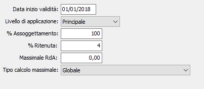

Aliquote ritenute di acconto
La tabella consente di gestire le variazioni di percentuale, relative alle ritenute emesse tramite le funzionalità della fattura di vendita, nel corso del tempo.

Nel campo “Livello di applicazione” deve essere indicata la tipologia di aliquota a cui si riferiscono le percentuali, se Principale o Aggiuntiva, se gestite queste ultime a livello di configurazione; per data di inizio validità possono essere specificate le percentuali di assoggettamento e l’aliquota da applicare.
Nel caso in cui si attivi una delle due ritenute in una data successiva alla data di inizio gestione è necessario impostare le percentuali in configurazione, per poter attivare una od entrambe le gestioni, e due record su questa tabella per ogni tipologia attivata, una con una data di inizio validità uguale alla data di inizio gestione e le percentuali a zero (in modo che se viene variata una fattura precedente alla data di inizio gestione non venga calcolato erroneamente l’importo della ritenuta) e uno con data di inizio validità e le percentuali effettive da gestire.
Nel caso in cui sia stato attivato il flag “Utilizza tipi ritenuta configurabili”, presente nella configurazione Standard – Ciclo attivo, nel campo “Livello di applicazione” vengono visualizzate le diciture delle etichette configurate e per ognuna è necessario specificare le percentuali di assoggettamento e l’aliquota da applicare.
Nel campo “Massimale RdA” deve essere inserito il valore del massimale superato il quale non deve essere calcolata la ritenuta, questo in particolar modo per gestire il massimale relativo al contributo previdenziale Enasarco, indicando tale massimale deve essere indicato se il calcolo è globale (come ad esempio per gli agenti monomandatari) o per cliente (come ad esempio per gli agenti plurimandatari). Il massimale viene utilizzato nel calcolo dell’imponibile RdA sulle fatture, mentre il massimale non viene utilizzato per calcolare l’imponibile RdA sulle note di credito, su queste viene calcolata la ritenuta non tenendo conto del massimale ma concorrono al calcolo del residuo del massimale per le successive fatture. Nel caso in cui sia stato attivato il flag “Utilizza tipi ritenuta configurabili” il calcolo del massimale viene effettuato in base al tipo ritenuta impostato sulle fatture, quindi le fatture con tipo ritenuta diverso non concorrono al calcolo dell’importo dello stesso massimale.